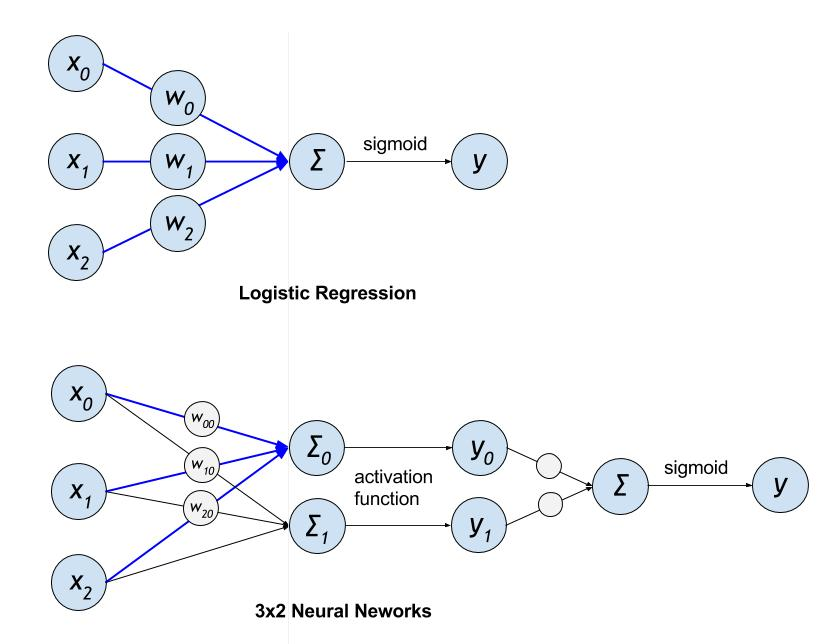
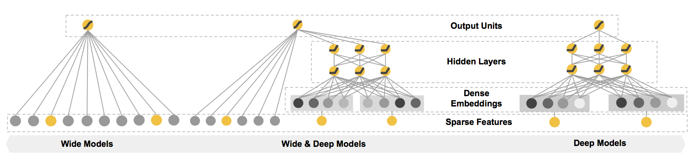

点击率预估
点击率预估
背景介绍
CTR(Click-Through Rate，点击率预估)[1] 是用来表示用户点击一个特定链接的概率， 通常被用来衡量一个在线广告系统的有效性。
当有多个广告位时，CTR 预估一般会作为排序的基准。 比如在搜索引擎的广告系统里，当用户输入一个带商业价值的搜索词（query）时，系统大体上会执行下列步骤来展示广告：
- 召回满足 query 的广告集合
- 业务规则和相关性过滤
- 根据拍卖机制和 CTR 排序
- 展出广告
可以看到，CTR 在最终排序中起到了很重要的作用。
发展阶段
在业内，CTR 模型经历了如下的发展阶段：
- Logistic Regression(LR) / GBDT + 特征工程
- LR + DNN 特征
- DNN + 特征工程
在发展早期时 LR 一统天下，但最近 DNN 模型由于其强大的学习能力和逐渐成熟的性能优化， 逐渐地接过 CTR 预估任务的大旗。
LR vs DNN
下图展示了 LR 和一个 (3x2) 的 DNN 模型的结构：

Figure 1. LR 和 DNN 模型结构对比
LR 的蓝色箭头部分可以直接类比到 DNN 中对应的结构，可以看到 LR 和 DNN 有一些共通之处（比如权重累加）， 但前者的模型复杂度在相同输入维度下比后者可能低很多（从某方面讲，模型越复杂，越有潜力学习到更复杂的信息）。
如果 LR 要达到匹敌 DNN 的学习能力，必须增加输入的维度，也就是增加特征的数量， 这也就是为何 LR 和大规模的特征工程必须绑定在一起的原因。
LR 对于 DNN 模型的优势是对大规模稀疏特征的容纳能力，包括内存和计算量等方面，工业界都有非常成熟的优化方法。
而 DNN 模型具有自己学习新特征的能力，一定程度上能够提升特征使用的效率， 这使得 DNN 模型在同样规模特征的情况下，更有可能达到更好的学习效果。
本文后面的章节会演示如何使用 PaddlePaddle 编写一个结合两者优点的模型。
数据和任务抽象
我们可以将 click 作为学习目标，任务可以有以下几种方案：
- 直接学习 click，0,1 作二元分类
- Learning to rank, 具体用 pairwise rank（标签 1>0）或者 listwise rank
- 统计每个广告的点击率，将同一个 query 下的广告两两组合，点击率高的>点击率低的，做 rank 或者分类
我们直接使用第一种方法做分类任务。
我们使用 Kaggle 上 Click-through rate prediction 任务的数据集[2] 来演示模型。
具体的特征处理方法参看 data process
Wide & Deep Learning Model
谷歌在 16 年提出了 Wide & Deep Learning 的模型框架，用于融合适合学习抽象特征的 DNN 和 适用于大规模稀疏特征的 LR 两种模型的优点。
模型简介
Wide & Deep Learning Model[3] 可以作为一种相对成熟的模型框架使用， 在 CTR 预估的任务中工业界也有一定的应用，因此本文将演示使用此模型来完成 CTR 预估的任务。
模型结构如下：

Figure 2. Wide & Deep Model
模型左边的 Wide 部分，可以容纳大规模系数特征，并且对一些特定的信息（比如 ID）有一定的记忆能力； 而模型右边的 Deep 部分，能够学习特征间的隐含关系，在相同数量的特征下有更好的学习和推导能力。
编写模型输入
模型只接受 3 个输入，分别是
dnn_input，也就是 Deep 部分的输入lr_input，也就是 Wide 部分的输入click， 点击与否，作为二分类模型学习的标签
dnn_merged_input = layer.data(
name='dnn_input',
type=paddle.data_type.sparse_binary_vector(data_meta_info['dnn_input']))
lr_merged_input = layer.data(
name='lr_input',
type=paddle.data_type.sparse_binary_vector(data_meta_info['lr_input']))
click = paddle.layer.data(name='click', type=dtype.dense_vector(1))
编写 Wide 部分
Wide 部分直接使用了 LR 模型，但激活函数改成了 RELU 来加速
def build_lr_submodel():
fc = layer.fc(
input=lr_merged_input, size=1, name='lr', act=paddle.activation.Relu())
return fc
编写 Deep 部分
Deep 部分使用了标准的多层前向传导的 DNN 模型
def build_dnn_submodel(dnn_layer_dims):
dnn_embedding = layer.fc(input=dnn_merged_input, size=dnn_layer_dims[0])
_input_layer = dnn_embedding
for i, dim in enumerate(dnn_layer_dims[1:]):
fc = layer.fc(
input=_input_layer,
size=dim,
act=paddle.activation.Relu(),
name='dnn-fc-%d' % i)
_input_layer = fc
return _input_layer
两者融合
两个 submodel 的最上层输出加权求和得到整个模型的输出，输出部分使用 sigmoid 作为激活函数，得到区间 (0,1) 的预测值，
来逼近训练数据中二元类别的分布，并最终作为 CTR 预估的值使用。
# conbine DNN and LR submodels
def combine_submodels(dnn, lr):
merge_layer = layer.concat(input=[dnn, lr])
fc = layer.fc(
input=merge_layer,
size=1,
name='output',
# use sigmoid function to approximate ctr, wihch is a float value between 0 and 1.
act=paddle.activation.Sigmoid())
return fc
训练任务的定义
dnn = build_dnn_submodel(dnn_layer_dims)
lr = build_lr_submodel()
output = combine_submodels(dnn, lr)
# ==============================================================================
# cost and train period
# ==============================================================================
classification_cost = paddle.layer.multi_binary_label_cross_entropy_cost(
input=output, label=click)
paddle.init(use_gpu=False, trainer_count=11)
params = paddle.parameters.create(classification_cost)
optimizer = paddle.optimizer.Momentum(momentum=0)
trainer = paddle.trainer.SGD(
cost=classification_cost, parameters=params, update_equation=optimizer)
dataset = AvazuDataset(train_data_path, n_records_as_test=test_set_size)
def event_handler(event):
if isinstance(event, paddle.event.EndIteration):
if event.batch_id % 100 == 0:
logging.warning("Pass %d, Samples %d, Cost %f" % (
event.pass_id, event.batch_id * batch_size, event.cost))
if event.batch_id % 1000 == 0:
result = trainer.test(
reader=paddle.batch(dataset.test, batch_size=1000),
feeding=field_index)
logging.warning("Test %d-%d, Cost %f" % (event.pass_id, event.batch_id,
result.cost))
trainer.train(
reader=paddle.batch(
paddle.reader.shuffle(dataset.train, buf_size=500),
batch_size=batch_size),
feeding=field_index,
event_handler=event_handler,
num_passes=100)
运行训练和测试
训练模型需要如下步骤：
- 下载训练数据，可以使用 Kaggle 上 CTR 比赛的数据[2]
- 从 Kaggle CTR 下载 train.gz
- 解压 train.gz 得到 train.txt
- 执行
python train.py --train_data_path train.txt，开始训练
上面第2个步骤可以为 train.py 填充命令行参数来定制模型的训练过程，具体的命令行参数及用法如下
usage: train.py [-h] --train_data_path TRAIN_DATA_PATH
[--batch_size BATCH_SIZE] [--test_set_size TEST_SET_SIZE]
[--num_passes NUM_PASSES]
[--num_lines_to_detact NUM_LINES_TO_DETACT]
PaddlePaddle CTR example
optional arguments:
-h, --help show this help message and exit
--train_data_path TRAIN_DATA_PATH
path of training dataset
--batch_size BATCH_SIZE
size of mini-batch (default:10000)
--test_set_size TEST_SET_SIZE
size of the validation dataset(default: 10000)
--num_passes NUM_PASSES
number of passes to train
--num_lines_to_detact NUM_LINES_TO_DETACT
number of records to detect dataset's meta info
参考文献
- https://en.wikipedia.org/wiki/Click-through_rate
- https://www.kaggle.com/c/avazu-ctr-prediction/data
- Cheng H T, Koc L, Harmsen J, et al. Wide & deep learning for recommender systems[C]//Proceedings of the 1st Workshop on Deep Learning for Recommender Systems. ACM, 2016: 7-10.